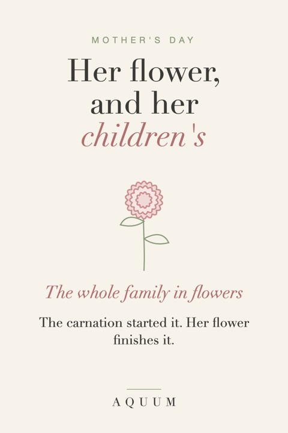

Mother's Day Birth Flower Gifts: Her Flower, and Her Children's
2026-09-30
Written by the team behind Aquum, a small birth flower gift shop. How we make money.

Mother's Day and flowers go together, but a birth flower makes the flowers about her. Her own flower says something about who she is; her children's flowers, together, tell the story of her family.
The flower that started it
The carnation was the original Mother's Day flower in the United States: Anna Jarvis handed out white carnations at the first celebrations. Today pink carnations stand for a mother's love. If she was born in January, it's also her birth flower. More in the January birth flower guide.
Her flower, or the whole family
- Her own birth flower, with its meaning. Find it in what is my birth flower.
- A family set: her flower plus one for each child, on a shirt, a print or matching mugs.
- For a new mom: her baby's birth flower. See birth flower gifts for new moms.
- For Grandma: the whole family in flowers. See gifts for Grandma.
Gift ideas
- A soft tee with her flower for weekends and slow mornings.
- A mug for her coffee or tea.
- A tote for the garden center, the market or the library.
- Bulbs or seeds of her flower, planted together.
What to write in the card
"Your flower is the daisy. It means uncomplicated joy. That's what you've always given us."
Order early
Mother's Day is the second Sunday in May, and it's one of the busiest weeks of the year for gifts. Made-to-order gifts take about a week to be made and shipped in the US: order by the end of April. More ideas in our birth flower gifts for Mom.